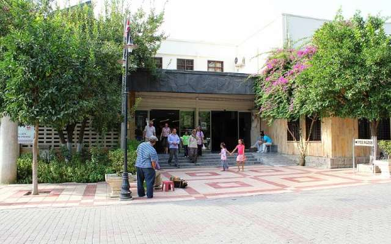
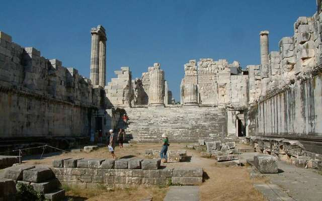

مسار في بحر إيجه يجمع بعضًا من ألمع مدن العالم القديم: من برغاموم شمالًا إلى أفسس، ثم برييني وميليتوس وديديما في وادي مياندر.
اليوم 1

كان أكروبوليس برغامة القلب السياسي والثقافي لبرغاموم، عاصمة المملكة البرغامية الهلنستية، وقد بُني على تل شديد الانحدار يرتفع مئات الأمتار فوق السهل.

كان أسكليبيون برغاموم، المكرّس لإله الشفاء أسكليبيوس، من أشهر المراكز العلاجية في العالم القديم.

البازيليكا الحمراء في وسط برغامة معبد روماني ضخم سُمّي بهذا الاسم نسبة إلى آجره الأحمر.

متحف برغامة من أقدم المتاحف في تركيا، ويعرض التراث الغني لبرغاموم القديمة.
اليوم 2

كانت أفسس من أعظم المدن المينائية في العصور القديمة، ومن ألمع مراكز ولاية آسيا الرومانية، وكان معبد أرتميس، إحدى عجائب الدنيا السبع، يقوم بالقرب منها.

بيوت المنحدر في أفسس، بجوار شارع كوريتس، مساكن فاخرة لعائلات رومانية ثرية بُنيت مدرّجة على المنحدر.

يعرض متحف أفسس، في وسط سلجوق، مكتشفات من أفسس ومحيطها، وهو من أكثر المتاحف زيارة في تركيا.

بنى الإمبراطور جستنيان في القرن السادس بازيليكا القديس يوحنا، على منحدر تل أياسولوك في سلجوق، فوق المكان الذي يضع فيه التقليد قبر يوحنا الرسول.

تتوّج قلعة أياسولوك التل المطل على سلجوق، وهي القلب الدفاعي للمدينة التي خلفت أفسس في العصور الوسطى.
اليوم 3

بُنيت برييني على مدرجات عند سفح المنحدرات الشاهقة لجبل ميكالي، وهي من أروع أمثلة المدن القديمة المخططة: شوارع تتقاطع بزوايا قائمة، ومربعات سكنية متساوية، ومبانٍ عامة…

كانت ميليتوس من أكثر مدن العصور القديمة تأثيرًا، إذ أسست عشرات المستعمرات من البحر الأسود إلى مصر، وتُذكر بأنها مهد الفلسفة: عاش فيها طاليس وأناكسيماندر وأناكسيمينس،…

يعرض متحف ميليتوس، المجاور لميليتوس القديمة، مكتشفات من المدينة ومن المزارات القريبة.

معبد أبولو في ديديم قلب ديديما، أحد أهم مزارات الوحي في العالم القديم، الذي كان يربطه بميليتوس طريق مقدس.
مسارات جاهزة مرتبة يومًا بيوم لمساعدتك في التخطيط. المدد تقريبية؛ تحقق من مواعيد الزيارة وحالة الطرق قبل السفر.